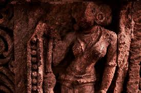

<()><()><()><()><()> MEDIEVAL PERIOD <()><()><()><()><()>
Medieval India refers to a long period of the history of the Indian subcontinent between the
"ancient period" and "modern period".,
Definitions of the period itself vary widely, and partly for this reason, many historians now prefer to avoid the term completely.[1] One definition, used in the rest of this article, includes the period from the 8th century[2] to the 16th century, essentially the same period as the Middle Ages of Europe. It may be divided into two periods: The 'early medieval period' which lasted from the 6th to the 13th century and the 'late medieval period' which lasted from the 13th to the 16th century, ending with the start of the Mughal Empire in 1526. The Mughal era, from the 16th century to the 18th century, is often referred to as the early modern period,[3] but is sometimes also included in the 'late medieval' period. An alternative definition, often seen in those more recent authors who still use the term at all, brings the start of the medieval period forward, either to about 1,000, or to the 12th century. The end may be pushed back to the 18th century, making the period in effect that between the start of Muslim domination (at least in northern India) and British India. Or the "early medieval" period is begun in the 8th century, ending with the 11th.[4] The use of "medieval" at all as a term for periods in Indian history has often been objected to, and is probably becoming more rare (there is a similar discussion in terms of the history of China).[5] It is argued that neither the start nor the end of the period really mark fundamental changes in Indian history, comparable to the European equivalents.[6] Burton Stein still used the concept in his A History of India (1998, referring to the period from the Guptas to the Mughals), but most recent authors using it are Indian. Understandably, they often specify the period they cover within their titles.[7] The critic Peter Hardy argues that Muslim historiography on medieval India is often motivated by Islamic apologetics which tries to justify "the life of medieval Muslims to the modern world .The Rajput works of art can be ordered into two schools-the Rajasthani and the Pahari schools of painting. The subjects of the artworks were enormously affected by the Bhakti religion and for the most part portray scenes from the Ramayana and Mahabharata and Radha and Krishna in different temperaments. The system of both the schools is the same and both have made utilization of brilliant shades to explain scenes from the lives of theThe Rajputs were significantly great builders who expended extravagantly on building forts, palaces and temples to show off their generous wealth and valor. In this period Temple building reached its zenith. basic individuals."
Definitions of the period itself vary widely, and partly for this reason, many historians now prefer to avoid the term completely.[1] One definition, used in the rest of this article, includes the period from the 8th century[2] to the 16th century, essentially the same period as the Middle Ages of Europe. It may be divided into two periods: The 'early medieval period' which lasted from the 6th to the 13th century and the 'late medieval period' which lasted from the 13th to the 16th century, ending with the start of the Mughal Empire in 1526. The Mughal era, from the 16th century to the 18th century, is often referred to as the early modern period,[3] but is sometimes also included in the 'late medieval' period. An alternative definition, often seen in those more recent authors who still use the term at all, brings the start of the medieval period forward, either to about 1,000, or to the 12th century. The end may be pushed back to the 18th century, making the period in effect that between the start of Muslim domination (at least in northern India) and British India. Or the "early medieval" period is begun in the 8th century, ending with the 11th.[4] The use of "medieval" at all as a term for periods in Indian history has often been objected to, and is probably becoming more rare (there is a similar discussion in terms of the history of China).[5] It is argued that neither the start nor the end of the period really mark fundamental changes in Indian history, comparable to the European equivalents.[6] Burton Stein still used the concept in his A History of India (1998, referring to the period from the Guptas to the Mughals), but most recent authors using it are Indian. Understandably, they often specify the period they cover within their titles.[7] The critic Peter Hardy argues that Muslim historiography on medieval India is often motivated by Islamic apologetics which tries to justify "the life of medieval Muslims to the modern world .The Rajput works of art can be ordered into two schools-the Rajasthani and the Pahari schools of painting. The subjects of the artworks were enormously affected by the Bhakti religion and for the most part portray scenes from the Ramayana and Mahabharata and Radha and Krishna in different temperaments. The system of both the schools is the same and both have made utilization of brilliant shades to explain scenes from the lives of theThe Rajputs were significantly great builders who expended extravagantly on building forts, palaces and temples to show off their generous wealth and valor. In this period Temple building reached its zenith. basic individuals."
- Medieval India had the highest GDP % of any country in the history of the world.
- India was controlled by Muslims before the Maratha Empire took it back
- Science, philosophy and technology were flourishing in India.
- The Indian urban planning was the most advanced on Earth, including running water.
- India had some of the lowest poverty rates in the world
- India developed innoculations and plastic surgery and cataract surgery.
- India's understanding of atoms and the heliocentric model of the solar system predated any other nation on Earth.
- India was a bunch of warring states, but had no standing army.
- India was quite a libertine society with regards to sex and love at the time.
The four clans, namely −
Pratiharas, (or Pariharas), Chauhans (or Chahamanas), Solankis (or Chaulukyas), and Pawars (or Paramaras). These four agni-kula clans established their power in western India and parts of central India. The Pariharas ruled in the region of Kanauj; The Chauhans were strong in central Rajasthan; Solanki power rose in the region of Kathiawar and the surrounding areas, and The Pawars established themselves in the region of Malwa with their capital at Dhar near Indore. Besides, some other minor rulers also became powerful and gradually built small kingdoms in various parts of northern India, for example − Nepal, Kamarupa (in Assam), Kashmir, and Utkala (in Orissa). Many of the hill states of the Punjab also developed during the early phase of medieval period; such as − Champaka (Chamba), Durgara (Jammu), and Kuluta (Kulu) in Himachal.Rajput’s were valiant and aggressive fighters which they even considered as their ‘Dharma’. They valued qualities and ideals that were of very high fundamentals. Yet they were large-hearted and generous and they took pride in their roots and lineage which to them was supreme. They were brave, egoistic and very forcefully loyal clan who gave shelter to the refugees and their foes.
Social and General Conditions of the People
Wars conquests and victories was the dominating feature of the Rajput culture and society.
The society suffered also because there was a great disparity in the standard of living of the people. They believed in caste and creed systems.
The ministers, officials, feudal chiefs belonged to the upper class so they enjoyed the privileges to accumulate wealth as they were entitled to live in luxury and splendor.
They were indulged in costly clothes, jewels and ornaments of gold and silver. They lived in palace like houses of several storeys.
The Rajput showed their glory with their Harems and number of servants that worked under them.
On the other hand the peasants were burdened with the land revenue and other taxes that were brutally taken by the feudal lords or else they had to render forced labor.
Caste System
The lower castes suffered the animosities of feudal lords who looked upon them like vultures.
Most of the workers like weavers, fishermen, barbers, etc. as well as tribal were treated very ruthlessly by their owners.
The Rajput’s as a new caste were more involved in image building and had supreme egos which made the caste system even more prominent.
Condition of Women,
Although the honor of women was much defined and matter of utter dignity to the Rajput’s yet they lived in an unauthentic and handicapped society. The Rajput women of low class were denied the right to study the Vedas. However families of higher families received higher education. The laws for women were very stingy. They were supposed to follow higher ideals in terms to their men and society. They were supposed to gladly sacrifice themselves along with the dead bodies of their husbands. Though there was no ‘purdah’ system. And ‘Swayamvar’ type of marriage was in vogue in several royal families yet the society saw the evil practice of Infanticide and early marriage. Education and Science Under the rule of Rajput only Brahmans and some sections of upper classes were entitled to be educated. The famous centre of higher learning was at Nalanda in Bihar and some other important centres were Vikramasila and Uddandapura. At this time only some Saiva centers of learning flourished in Kashmir. Religion and philosophy were the popular subjects for study and discussion.
Although the honor of women was much defined and matter of utter dignity to the Rajput’s yet they lived in an unauthentic and handicapped society. The Rajput women of low class were denied the right to study the Vedas. However families of higher families received higher education. The laws for women were very stingy. They were supposed to follow higher ideals in terms to their men and society. They were supposed to gladly sacrifice themselves along with the dead bodies of their husbands. Though there was no ‘purdah’ system. And ‘Swayamvar’ type of marriage was in vogue in several royal families yet the society saw the evil practice of Infanticide and early marriage. Education and Science Under the rule of Rajput only Brahmans and some sections of upper classes were entitled to be educated. The famous centre of higher learning was at Nalanda in Bihar and some other important centres were Vikramasila and Uddandapura. At this time only some Saiva centers of learning flourished in Kashmir. Religion and philosophy were the popular subjects for study and discussion.